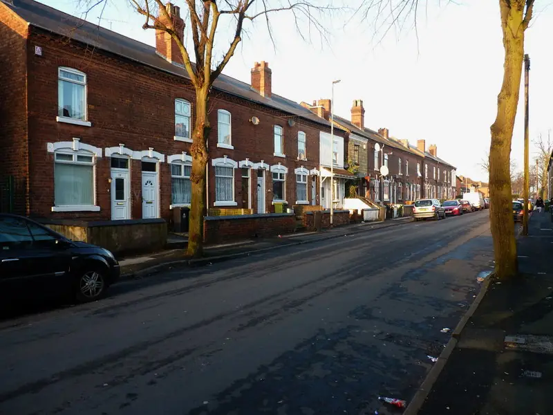

Recent cases
- Midland Road, January 2026. Police seized 1,737 plants, valued at around £1.7 million, from a disused factory near the town centre. A local police supervisor described it as one of the biggest hauls in the Walsall area.
- Riley Street, Willenhall. The Express and Star listed this among recent local finds in its coverage of Wolverhampton cases in October 2026.
Commercial and void units
Empty commercial buildings are attractive to growers because there are no neighbours through the wall and no inspections. If you own or manage one:
- Check your insurer's vacant property conditions. Many require regular inspections of empty buildings and a log of them.
- After a find, the clean-up is bigger: industrial quantities of waste, heavy equipment, and sometimes structural alterations.
- Waste must go through a registered carrier with transfer notes, and some items may count as hazardous.
Walsall HMO licensing
Walsall Council runs an additional HMO licensing scheme in Palfrey, Paddock, Pleck and St Matthew's, covering HMOs with three or more tenants from more than one household, until 31 August 2027. Mandatory HMO licensing applies across the borough. If your property is in one of these areas, check it meets licence conditions after the restoration and before re-letting.
How we help
We introduce you to up to two specialists who cover your WS postcode. For commercial premises, we look for firms with the capacity for larger strip-outs and the right waste permits.
Houses in the licensing area
Pleck, Palfrey, Paddock and St Matthew's sit inside Walsall's additional HMO licensing area. These wards have a lot of older terraced housing, and many houses are shared. If a grow is found in a licensed HMO:
- Read the licence conditions for any duty to tell the council about changes.
- Expect the council to want evidence the house is safe before it is re-let: a new EICR, fire doors and alarms back in working order, and damp dealt with.
- Ask the specialist to photograph fire doors, alarms and escape routes as part of their report. Growers often remove or prop doors and take down alarms.
Empty units and vacant property cover
For commercial owners, the risk is the empty building nobody visits. Many commercial policies have unoccupancy conditions that apply after a set number of days empty: regular inspections, utilities isolated, letterboxes sealed. If a grow is found in a unit that was meant to be empty:
- Tell your insurer straight away and ask what evidence they need.
- Do not assume the clean-up is just rubbish. Industrial grows can include heavy lighting rigs, water tanks and substantial electrical installations that need specialist removal.
- Make sure whoever removes the waste is registered with the Environment Agency and gives you waste transfer notes. You remain responsible for your waste under the duty of care.
Willenhall, Darlaston, Bloxwich and Aldridge
Walsall borough is more than the town. Willenhall (WV12 and WV13) and Darlaston (WS10) are in the borough, while Wednesbury, which shares WS10, is in Sandwell. Bloxwich, Brownhills and Aldridge complete the borough to the north and east. We match specialists by postcode, so give us the full postcode rather than the town.
Who to contact in Walsall
- West Midlands Police: 101.
- 105 for the meter and supply.
- Walsall Council: private sector housing and HMO licensing (linked below).
- Environment Agency public register to check a waste carrier before you hand over waste.
Questions landlords ask
Who clears a cannabis farm in an empty commercial unit?
The owner or leaseholder arranges it, usually through their insurer if the policy covers it. Use a firm with the capacity for heavy strip-outs and check its waste carrier registration on the Environment Agency register.
Is my house in Walsall's additional HMO licensing area?
The scheme covers Palfrey, Paddock, Pleck and St Matthew's, for HMOs with three or more tenants from more than one household. Walsall Council's page has the details and dates.
Do you cover Willenhall and Darlaston?
Yes. Both are in Walsall borough. Give us the full postcode and we will match a specialist who covers it.
What we can arrange in Walsall
Guides for Walsall landlords
Other areas: Birmingham, Sutton Coldfield, Solihull, Wolverhampton, Coventry, Dudley, Sandwell, West Bromwich.